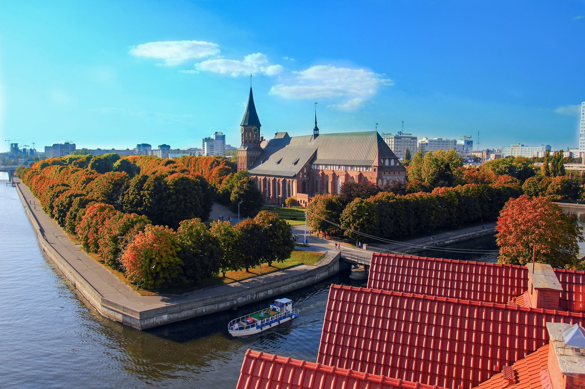

Остров Канта
Остров Канта — это истинный оазис спокойствия и красоты в сердце Калининграда. Уютно расположившись в реке Преголя, он является исторической жемчужиной города и привлекает множество туристов своим уникальным сочетанием природы и архитектуры. Остров получил своё название в честь известного философа Иммануила Канта, который жил и творил здесь.
Замок Нессельбек

Замок Нессельбек — это удивительное место, которое простояло на страже времени, сохраняя в себе дух средневековой истории Калининграда. Построенный в XV веке, этот архитектурный памятник очаровывает своими величественными стенами и крепостными башнями, среди которых витает дыхание древних легенд. Кругом простираются живописные пейзажи, а спокойствие водоемов, окружающих замок, добавляет особую атмосферу уединения и магии.
Музей Пыток
Это место не для слабонервных посетителей. Здесь представлены орудия наказания, которыми жестоко пытали и убивали злоумышленников, заговорщиков и преступников в давние времена. Все экспонаты восстановлены на основании чертежей и прочих исторических документов и дают возможность ознакомиться с тем, как выглядели эти орудия много лет назад. Если вы готовы собственными глазами увидеть смертельные машины для пыток, добро пожаловать в одну из башен замка Нессельбек.
Музей Мирового океана

Парк Яунземсада — это идеальное место для прогулок и отдыха. Здесь вы найдете разнообразные цветочные клумбы, уютные аллеи и пруд, в котором можно увидеть уток. Парк является отличным местом для семейных выходных и предлагает множество возможностей для активного отдыха.
Калининград-Кёнигсберг: прогулка на теплоходе

Парк Яунземсада — это идеальное место для прогулок и отдыха. Здесь вы найдете разнообразные цветочные клумбы, уютные аллеи и пруд, в котором можно увидеть уток. Парк является отличным местом для семейных выходных и предлагает множество возможностей для активного отдыха.
Музей Бункер
Парк Яунземсада — это идеальное место для прогулок и отдыха. Здесь вы найдете разнообразные цветочные клумбы, уютные аллеи и пруд, в котором можно увидеть уток. Парк является отличным местом для семейных выходных и предлагает множество возможностей для активного отдыха.
Башня Дона

Парк Яунземсада — это идеальное место для прогулок и отдыха. Здесь вы найдете разнообразные цветочные клумбы, уютные аллеи и пруд, в котором можно увидеть уток. Парк является отличным местом для семейных выходных и предлагает множество возможностей для активного отдыха.